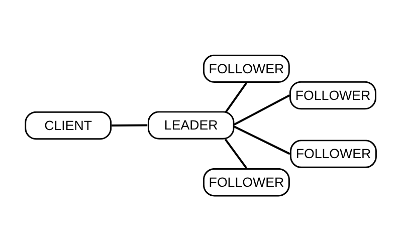

KUSRP: Blockchain and AI-Assisted Internet of Energy Systems
Note: This page is a summary of an independent research experience and is not a published article.
This project was part of the Koç University Summer Research Program (KUSRP), a research-focused internship program designed for high school and undergraduate students. I participated as a high school student and carried out the work independently.
The main focus of my project was the intersection of artificial intelligence, federated learning, blockchain technologies, and their combined role in future Internet of Energy (IoE) systems. My journey began by deeply exploring the core principles of federated learning — a decentralized machine learning method where data remains local while models are collaboratively trained across edge devices.
I studied the use cases of federated learning in energy systems, particularly for privacy-preserving load forecasting, anomaly detection, and intelligent grid decision-making. These systems require high levels of coordination and fault tolerance. That's when I discovered the significance of consensus protocols — and particularly, the Raft Consensus Algorithm.
Understanding Raft
Raft is a distributed consensus protocol used to maintain consistency across a network of nodes. I studied its leader election process, log replication mechanics, and failure recovery properties. This learning was critical for understanding how energy nodes in an IoE system could stay synchronized while still being decentralized.
The above illustration offers a simplified view of the Raft architecture. The Leader is at the center, coordinating multiple Followers, and also handling requests from a Client. Each arrow symbolizes communication flows — such as log replication or heartbeat messages — which are crucial for maintaining a consistent state across the system.
In energy networks, Raft can be used to ensure reliable coordination between distributed controllers, such as smart meters or energy hubs. These units can remain in sync without depending on a central authority, thus improving system resilience.
I also implemented a basic Python simulation of Raft to better understand how leader elections and failure handling play out in real time.
EV Charging Optimization
After building a foundation in distributed coordination and learning techniques, I explored how AI could be used to optimize energy distribution in practice. I worked with a real-world dataset from Kaggle: EV Charging Station Usage of California City .
I developed a Python-based clustering and location-optimization algorithm to recommend optimal placements for new EV charging stations. The algorithm aimed to reduce the average distance users would travel to charge, while also balancing load across the network.

The image above shows an example output centered on Palo Alto. It visualizes optimal charging station zones based on usage data and geographic distribution.
Full source code and methodology can be found here: EV Charging Optimization on GitHub .
Reflection
This independent project allowed me to connect multiple areas I’m passionate about: decentralized systems, machine learning, and energy sustainability. I was especially drawn to the practical and ethical implications of designing intelligent, decentralized infrastructures. Going forward, I hope to explore real-world deployments of such systems and work toward more scalable, secure, and environmentally aware energy solutions.
Keywords: Blockchain, Artificial Intelligence, Federated Learning, Internet of Energy, Raft Consensus, Electric Vehicles, Optimization, KUSRP